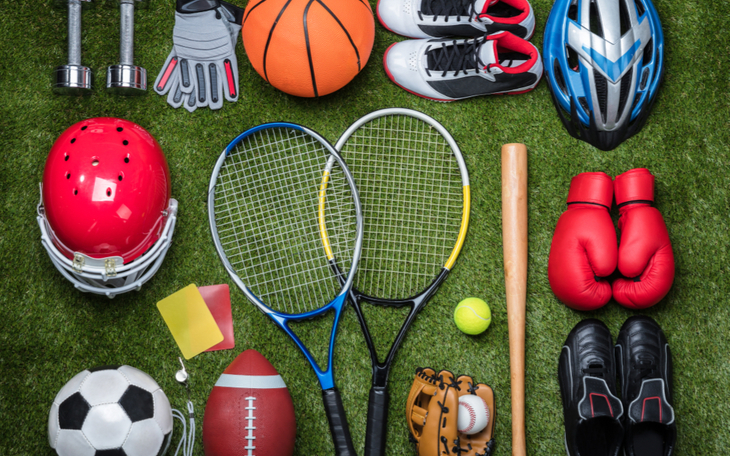

Quem Somos

A EsporteTV é uma empresa dedicada à cobertura de eventos esportivos de diversas modalidades.
Nossa missão é levar aos nossos espectadores conteúdo de qualidade,
com transmissões ao vivo, análises de especialistas e entrevistas exclusivas.
Nossa Equipe
Nossa equipe é composta por profissionais apaixonados por esportes, incluindo jornalistas, comentaristas, cinegrafistas e produtores.
Trabalhamos incansavelmente para garantir que você tenha a melhor experiência ao assistir aos eventos esportivos.
Nossa História
A EsporteTV foi fundada em 2024 por dois amigos que compartilhavam uma paixão comum por esportes.
Desde então, crescemos e nos tornamos uma das principais referências em cobertura esportiva em todo o paí
Clique na seção "Contato" para conferir os criadores dá pagina
O futuro
A cidade natal de nossa empresa é Caçapava - Sp, porém seguimos sempre expandindo nossos negócios,
e gostariamos de terminar nosso projeto sendo a maior transmissora de esportes do Brasil e do Mundo.
Transmissões Ao Vivo
Assista aos jogos e eventos esportivos mais emocionantes ao vivo e em alta definição. Não perca nenhum lance!
Análises e Coberturas Especiais
Nossos especialistas em esportes fornecem análises detalhadas e coberturas especiais dos principais eventos esportivos, mantendo você informado e atualizado.
Futebol

O futebol é o esporte coletivo mais praticado do mundo. É disputado por duas equipes, de 11 jogadores que têm como objetivo colocar a bola entre as traves adversárias o maior número de vezes sem usar mãos e braços. Esse objetivo é chamado gol.O futebol é um esporte coletivo que não tem uma origem bem definida, uma vez que diversos jogos de bola semelhantes a ele já eram praticados por povos da Antiguidade.
No entanto, se considerarmos a semelhança de suas regras na atualidade, podemos dizer que esse esporte teve origem em fins do século XIX na Inglaterra, quando foram estabelecidas as primeiras regras do jogo de futebol.
Ao longo dos anos, o futebol foi se desenvolvendo e hoje é um dos esportes mais conhecidos e amados do mundo.
Volei

O vôlei, também chamado de volley ou voleibol, é um esporte de origem
norte-americana do século XIX. É um esporte de popularidade significativa
em grande parte do mundo, e está presente em muitos torneios e eventos
esportivos de âmbito internacionais, tais como os Jogos Olímpicos e os Jogos
Panamericanos. Pode ser praticado tanto em quadras abertas quanto em quadras fechadas,
bem como é praticado quase que igualmente tanto por homens quanto mulheres.

.webp)